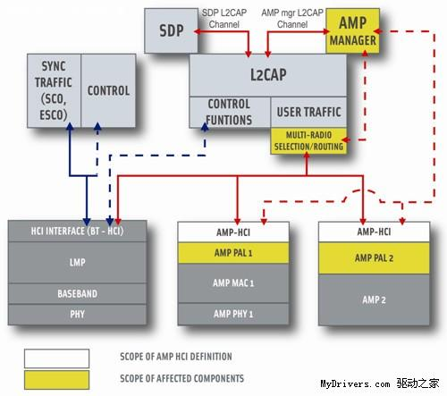

蓝牙 V1.11.22.02.13.0
蓝牙技术版本
1）蓝牙目前暂时共有五个版本 V1.1/1.2/2.0/2.1/3.0。
2）以通讯距离来在不同版本可再分为 Class A(1)/Class B(2)。
蓝牙1.1，1.2
1.1 为最早期版本，传输率约在748~810kb/s，因是早期设计，容易受到同频率之产品所干扰下影响通讯质量。
1.2 同样是只有 748~810kb/s 的传输率，但在加上了AFH抗干扰跳频功能。
无论1.1/1.2版本的蓝牙产品，本身基本是可以支持Stereo音效的传输要求，但只能够作（单工）方式工作，加上音带频率响应不太足够，并未算是最好之Stereo传输工具。
蓝牙2.0
版本2.0是1.2的改良提升版，传输率约在1.8M/s~2.1M/s，可以有（双工）的工作方式。即一面作语音通讯，同时亦可以传输档案/高质素图片，现在市场上还有部分2.0Dongle出售，但2.1Dongle也已经非常多了。
Bluetooth 2.1+EDR
目前应用最为广泛的是Bluetooth 2.0+EDR标准，该标准在2004年已经推出，支持Bluetooth 2.0+EDR标准的产品也于2006年大量出现。虽然Bluetooth 2.0+EDR标准在技术上作了大量的改进，但从1.X标准延续下来的配置流程复杂和设备功耗较大的问题依然存在。
为了改善蓝牙技术目前存在的问题，蓝牙SIG组织（Special Interest Group）推出了Bluetooth 2.1+EDR版本的蓝牙技术。
1.改善装置配对流程：由于有许多使用者在进行硬件之间的蓝牙配对时，会遭遇到许多问题，不管是单次配对，或者是永久配对，在配对的过程与必要操作过于繁杂，以往在连接过程中，需要利用个人识别码来确保连接的安全性，而改进过后的连接方式则是会自动使用数字密码来进行配对与连接，举例来说，只要在手机选项中选择连接特定装置，在确定之后，手机会自动列出目前环境中可使用的设备，并且自动进行连结。
而短距离的配对方面，也具备了在两个支持蓝牙的手机之间互相进行配对与通讯传输的NFC（Near Field CoMMunication）机制。NFC是短距离的无线RFID技术，在针对1~2公尺的短距离联机应用上，以电磁波为基础，取代传统无线电传输。由于NFC机制掌控了配对的起始侦测，当范围内的2台装置要进行配对传输时，只要简单的在手机屏幕上点选是否接受联机即可。不过要应用NFC功能，系统必须要内建NFC芯片或者是具备相关硬件功能。
2. 更佳的省电效果：蓝牙2.1版加入了Sniff Subrating的功能，透过设定在2个装置之间互相确认讯号的发送间隔来达到节省功耗的目的。一般来说，当2个进行连结的蓝牙装置进入待机状态之后，蓝牙装置之间仍需要透过相互的呼叫来确定彼此是否仍在联机状态，当然，也因为这样，蓝牙芯片就必须随时保持在工作状态，即使手机的其它组件都已经进入休眠模式。为了改善了这样这样的状况，蓝牙2.1将装置之间相互确认的讯号发送时间间隔从旧版的0.1秒延长到0.5秒左右，如此可以让蓝牙芯片的工作负载大幅降低，也可让蓝牙可以有更多的时间可以彻底休眠。根据官方的报告，采用此技术之后，蓝牙装置在开启蓝牙联机之后的待机时间可以有效延长5倍以上。
蓝牙3.0
在日本东京召开的年度全体会议上，蓝牙技术联盟(Bluetooth SIG)正式颁布了新一代标准规范“Bluetooth Core Specification Version 3.0 + High Speed”(蓝牙核心规范3.0版+高速)，可简称为“蓝牙3.0+HS”，或者“蓝牙3.0”。
蓝牙3.0的核心是“Generic Alternate MAC/PHY”(AMP)。这是一种全新的交替射频技术，允许蓝牙协议栈针对任一任务动态地选择正确的射频。
作为新版规范，蓝牙3.0的传输速度自然会更高，而秘密就在802.11无线协议上。通过集成“802.11 PAL”(协议适应层)，蓝牙3.0的数据传输率提高到了大约24Mbps，是蓝牙2.0的八倍，可以轻松用于录像机至高清电视、PC至PMP、UMPC至打印机之间的资料传输。
功耗方面，通过蓝牙3.0高速传送大量数据自然会消耗更多能量，但由于引入了增强电源控制(EPC)机制，再辅以802.11，实际空闲功耗会明显降低，蓝牙设备的待机耗电问题有望得到初步解决。事实上，蓝牙联盟也正在着手制定新规范的低功耗版本。
除此之外蓝牙3.0还具备通用测试方法(GTM)和单向广播无连接数据(UCD)两项技术。

在日本东京召开的年度全体会议上，蓝牙技术联盟(Bluetooth SIG)正式颁布了新一代标准规范“Bluetooth Core Specification Version 3.0 + High Speed”(蓝牙核心规范3.0版+高速)，可简称为“蓝牙3.0+HS”，或者“蓝牙3.0”。蓝牙3.0的核心是“Generic Alternate MAC/PHY”(AMP)。这是一种全新的交替射频技术，允许蓝牙协议栈针对任一任务动态地选择正确的射频。作为新版规范，蓝牙3.0的传输速度自然会更高，而秘密就在802.11无线协议上。通过集成“802.11 PAL”(协议适应层)，蓝牙3.0的数据传输率提高到了大约24Mbps，是蓝牙2.0的八倍，可以轻松用于录像机至高清电视、PC至PMP、UMPC至打印机之间的资料传输。功耗方面，通过蓝牙3.0高速传送大量数据自然会消耗更多能量，但由于引入了增强电源控制(EPC)机制，再辅以802.11，实际空闲功耗会明显降低，蓝牙设备的待机耗电问题有望得到初步解决。事实上，蓝牙联盟也正在着手制定新规范的低功耗版本。除此之外蓝牙3.0还具备通用测试方法(GTM)和单向广播无连接数据(UCD)两项技术。令人兴奋的是，理论上可以通过升级固件让蓝牙2.1设备也支持蓝牙3.0。当然，手机、PMP等便携设备基本没戏，但配备了蓝牙2.1模块的PC却有此可能，关键就看厂商愿不愿意发布新固件了。联盟成员Atheros、Broadcom、CSR等已经开始为设备制造商研发蓝牙3.0解决方案。如果一切顺利，蓝牙3.0设备将在9-12月后上市。在下边这段演示视频中可以看到，蓝牙3.0的传输速度甚至达到了26Mpbs，而蓝牙2.1不足2Mpbs。